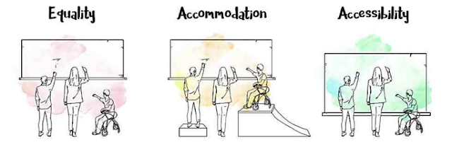

Essay 02
Defining Learning Design and Technology
Note: This post was originally written for the ASU course LTD 502: Design and Development of Instruction.
What is your personal definition of learning design?
Learning design is the intentional practice of creating a learning experience that meets the needs of all learners. Universal Design is also an integral part of my personal definition of learning design because when we aren't intentionally including everyone, we're excluding someone.
The image below is a great representation of why Universal Design and accessibility should be an integral part of the learning design process: Accessibility reduces barriers and naturally accommodates everyone from the start.

How does technology play a central role?
Technology surrounds most of modern Western society today. However, the ability to access modern technology and fast internet varies around the world. In fact, according to Gronseth et al. (2021), 30% of internet connections in "developing countries" were less than 2 megabits per second in 2017. To compare, 70% of internet connections in the Americas were 10 or more megabits per second in 2017 (Gronseth et al., 2021). This means that students in New York City are likely to have a very different experience than students in countries that are still recovering from decades, if not centuries, of colonization. Internet speeds and access to technology also varies within countries like the United States, leading to students in San Francisco possibly having a vastly different experience than students in rural Texas.
The inequities of internet and technology access significantly impacts both in person and online learning since many well-funded schools have integrated technology into the classroom, while others are still limited to chalkboards and paper alone.
When designing learning and determining where to host the learning, the computer RAM and the internet speed necessary to access the course should be taken into consideration. These are some important considerations to ensure that technology itself doesn't become a barrier:
- How long will the course website take to load if a student has poor internet speeds or a 10-year-old laptop?
- Is there a workaround or alternative way to accommodate these students?
Additionally, digital literacy is another aspect that should be considered during the learning design process. Technological skills can vary widely, even among those in the technology sector. Here are some other important questions to consider:
- Is the user interface (UI) intuitively designed? Did students test the navigation?
- Which aspects of the user experience might cause confusion?
- Are there clear, easy-to-find technology instructions for students? Are there demos or tutorials?
What key phrases or words in your definition are absolutely critical for someone else to understand your approach to teaching/training with technology?
- Universal Design for Learning (UDL)
- Self-referential design
- Differentiated Instruction (DI)
- Cultural Relevant (or Cultural Competence)
What does each keyword or phrase mean to you?
- Universal Design for Learning (UDL)
- It is the intentional practice of designing for all students and student needs. The UDL framework consists of principles that guide learning designers to ensure they consider as many student needs and circumstances as possible.
- Self-Referential Design
- Designing based on your own needs rather than the learners'. This is often unintentional, but is still necessary to be aware of in order to intentionally avoid doing it.
- Differentiated Instruction (DI)
- Utilizing multiple, flexible modes of instruction to naturally accommodate the diverse needs of learners. There's many tools available to help with this, as well, such as slow internet simulators or browser extensions that help you simulate viewing something as if you had various types of color blindness or visual disabilities.
- Cultural Relevant, or Cultural Competence
- Culture plays a significant role in the learning experience, and it must be taken into consideration when it comes to education. It is essential for educators and learning designers, especially content developers, to have strong cultural knowledge in order to prevent misunderstandings or miscommunications. When writing for a global audience as a technical writer, I must consider how words or phrases can be interpreted differently in other countries, regions, or cultures. For instance, it is a best practice in technical writing to avoid jargon, idioms, cliches, and colloquialisms since they are specific to particular cultures or regions. For instance, writing "enter a ballpark figure in the new field to test it" could be interpreted as "enter your best guess in the new field" or as "enter a baseball number in the new field" by someone who is unfamiliar with the cliche.
How do the readings that were provided in this module connect to your definition?
The readings for this module heavily focused on equitable learning and learning experiences, which is a topic I am deeply passionate about. The readings therefore align with and validate my personal definition. Access to education should be equitable for all people, and yet when steps are taken to include more students, disability is still often left out. I strongly believe that Universal Design for Learning (UDL) should be considered an essential, baseline aspect in learning design, so I was thrilled to see Chapter 2 of the book discuss the importance of Universal Design.
References
Gronseth, S. L., Michela, E., & Ugwu, L. O. (2021). Designing for Diverse Learners. In J. K. McDonald & R. E. West (Eds.), Design for Learning: Principles, Processes, and Praxis. EdTech Books. edtechbooks.org/id/designing_for_diverse_learners